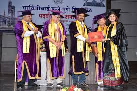
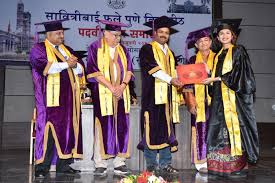

Welcome to Fergusson College Pune
With the end of the East India Company's regime in India and the failure of the first armed uprising in 1857, for India's freedom, a new era dawned in our country. It was clear that the emancipation of our land and the transformation of the life of our people had to be brought about by peaceful and constitutional means. Indian renaissance had began and it heralded the role which education needed to play to achieve national aspirations. Wood's Education Despatch (1854), the Education Commission of 1882 and the Hunter Commission (1891), were all indicative of the concerted efforts, of both the Government and the Indian people, in the enterprise of education. The Founders of the Fergusson College had first started the New English School, Pune in 1880 and later established the Deccan Education Society (DES) in 1884.The college held these classes, for almost ten years, in the old Gadre Wada and other locations in Poona. A plot of about 37 acres (a portion of the present extensive campus) was acquired on a 99 years' lease in 1891 by the DES. The foundation stone of the Main building of the Fergusson College, was laid in 1892 and the building was completed in 1895. The college started functioning on this campus in 1895. From then onwards, the college has grown from strength to strength and acquired a reputation as a nation-building institution. While the founders have become legends, in the history of education and the freedom struggle in India, it is a matter of great significance, that the college received active and moral support from academicians and statesmen, such as Principal William Wordsworth, Principal F. G. Selby, Lord Rippon, Sir William Wedderburn and Sir James Fergusson.Fergusson College was intended to be, "the seminary of the Indian educational missionaries". India.